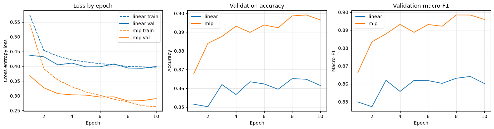

Assignment 1 — Foundations of Deep Learning Pipelines and Architectures
Status: M2 in progress (CNN and LSTM complete) · M2 Final due 21 Oct 2026
Group members
Lê Phước Vũ (2353341) · Nguyễn Vũ Long (2352696) · Nguyễn Hoàng Quốc (2353027)
Problem statement
We classify a single 28×28 grayscale clothing image into one of 10 product categories (T-shirt/top, Trouser, Pullover, Dress, Coat, Sandal, Shirt, Sneaker, Bag, Ankle boot). The same kind of task appears in retail catalogues, where product photos need to be sorted automatically.
- Input: one 28×28 grayscale image, raw
uint8pixels 0–255. - Output: 10 class logits, and the predicted label is the argmax.
- Prediction unit: one image.
- Main difficulties: low resolution and no colour; upper-body garments (T-shirt, Pullover, Coat, Shirt) have very similar silhouettes; there is noticeable variation within each class.
Dataset description and EDA
Fashion-MNIST (Zalando, MIT license) is the main comparison dataset.
We load it with torchvision.datasets.FashionMNIST. It has 60,000 official
training images and 10,000 official test images. MNIST is used only for debugging.
| Partition | Images | Per class | Source |
|---|---|---|---|
| Train | 54,000 | 5,400 | official train, stratified 90% |
| Validation | 6,000 | 600 | official train, stratified 10% |
| Test | 10,000 | 1,000 | official test (CNN and LSTM evaluated after validation selection) |
- The split uses seed 42 and is stored in
split_cache.json. Train and validation indices do not overlap, and no exact duplicate images appear in both. - The classes are perfectly balanced: the max/min ratio is 1.000 and each class is 10% of every subset.
- Training pixels have a mean of 72.98/255 and a standard deviation of 90.06/255. 50.2% of pixels are zero, and no image is entirely blank.
- Mean brightness depends strongly on the class, from about 34.9 for Sandal to 98.1 for Coat, and so does foreground coverage.


Methodology
Fashion-MNIST image (28×28, uint8) → ToTensor (float32, 0–1) → normalize with train-only stats (mean 0.2862, std 0.3532) → representation: flatten (784) | image (1×28×28) | row/col sequence (28×28) | patch sequence (49×16) → model → 10 logits → CrossEntropyLoss
| Model | Architecture | Params | Status |
|---|---|---|---|
| Linear / softmax | Linear(784, 10) | 7,850 | M1 done |
| MLP | 784→256→128→10, ReLU, Dropout 0.2 | 235,146 | M1 done |
| CNN | Conv 1→32→64, ReLU + max pooling; 3136→128→10, Dropout 0.2 | 421,642 | Trained and tested |
| LSTM | 28 row steps × 28 features; LSTM hidden 128; final hidden → Dropout 0.2 → Linear(128, 10) | 82,186 | Trained and tested |
| Transformer | — | — | M2 |
Both M1 models return raw logits because CrossEntropyLoss applies the softmax internally.
The image and sequence representations are already implemented in a1/data.py for the M2 models.
The custom CNN uses two 3×3 convolutions with shared local filters. Each produces feature maps, followed by ReLU and 2×2 max pooling. The resulting 64×7×7 features feed a small classifier. It is trained from scratch and returns raw logits. See the CNN experiment notes for layer shapes and explanations.
LSTM: image-to-sequence representation
Each normalized image has shape (1, 28, 28). Removing the channel axis gives
(28 steps, 28 features): step 1 is the top row's 28 pixels from left to right,
step 2 is the next row, and step 28 is the bottom row. All 784 pixels remain.
A batch has shape (B, 28, 28), where the second axis is ordered rows and the
third is pixel features. The exact mapping is S[b, r, c] = Z[b, 0, r, c].
The steps describe spatial order in a static image.

One forward LSTM layer carries 128-value hidden and cell states between rows of each image.
Its gates learn which earlier information to keep, write and expose. The states start at zero
for each image and are never shared between images or batches. After all rows, the final hidden
state h_n[-1] feeds Dropout(0.2) and Linear(128, 10), producing raw logits.
Dropout is disabled for evaluation. See the LSTM notes for
layer shapes, parameter calculations, checks and limitations, and the
PyTorch LSTM reference
for state and gate definitions.
Experimental setup
| Optimizer | Adam, learning rate 0.001 |
|---|---|
| Batch size / epochs | 128 / 10 |
| Seed | 42 (same split and normalization for every model) |
| Augmentation | off in M1 (optional horizontal flip and ±10° rotation, train split only) |
| Checkpoint rule | epoch with the lowest validation loss |
| Metrics | loss, accuracy, macro-F1 |
| Hardware | Apple Silicon (MPS), macOS 26.6 |
| Software | Python 3.14.7, PyTorch 2.14.0, torchvision 0.29.0, scikit-learn 1.9.1 |
| Config | A1/configs/m1.json |
Results
These are M1 validation results from one seed and one split. They are not test results.
| Model | Best epoch | Val loss | Val accuracy | Val macro-F1 | Params | Train time |
|---|---|---|---|---|---|---|
| Linear | 9 | 0.3932 | 0.8648 | 0.8641 | 7,850 | 27.6 s |
| MLP | 8 | 0.2825 | 0.8987 | 0.8985 | 235,146 | 28.1 s |

Custom CNN — M2 results, 11 October 2026
The CNN uses the same seed, split, normalization, Adam learning rate, batch size and 10-epoch budget as M1, with augmentation off. Epoch 10 had the lowest validation loss and was selected before test evaluation. This run used a GTX 1660 SUPER (6 GiB), Windows 11, Python 3.12.10, PyTorch 2.9.1+cu128 and torchvision 0.24.1+cu128.
| Partition | Loss | Accuracy | Macro-F1 | Images |
|---|---|---|---|---|
| Validation | 0.2001 | 93.28% | 0.9323 | 6,000 |
| Test | 0.2366 | 91.94% | 0.9189 | 10,000 |
Training and validation took 105.03 s. A device-resident batch of 128 images averaged 1.074 ms per forward pass after 10 warmup batches over 100 timed batches (0.00839 ms per image, amortized). This excludes loading and host transfers. The complete test pass, including loading, transfers, loss and predictions, took 1.382 s. These CUDA times cannot be directly ranked against the M1 MPS times.

LSTM — M2 results, 11 October 2026
The LSTM uses the same split, seed, normalization and 10-epoch training settings as the CNN, on the same Windows/CUDA environment and GTX 1660 SUPER. Epoch 9 has the lowest validation loss and was selected before test evaluation. Epoch 8 has slightly higher validation accuracy; the checkpoint rule consistently uses loss.
| Partition | Loss | Accuracy | Macro-F1 | Images |
|---|---|---|---|---|
| Validation | 0.2832 | 89.80% | 0.8967 | 6,000 |
| Test | 0.3254 | 88.48% | 0.8835 | 10,000 |
Training and validation took 122.12 s. A device-resident batch of 128 averaged 1.189 ms over 100 passes after 10 warmups (0.00929 ms per image, amortized), excluding loading/transfers. The complete test pass took 1.237 s. Checkpoint reload reproduces all 10,000 saved test predictions; CPU/CUDA labels agree on a 128-image batch. Evidence is in the experiment notes and verification record.

TODO (M2): Transformer experiment, Linear/MLP test evaluation, and the complete five-model comparison.
Comparison and discussion
The MLP scores about 3.4 points higher than the linear baseline in both validation accuracy (0.8987 vs 0.8648) and macro-F1 (0.8985 vs 0.8641). It has about 30× more parameters, but training time is almost the same (about 28 s for 10 epochs on MPS). The linear model's validation loss levels off at about 0.39 by epoch 5, so it is limited by capacity. The MLP's training loss keeps falling after its validation loss bottoms out at epoch 8, which is an early sign of overfitting. With only one seed, these differences are preliminary.
TODO (M2): full five-model comparison covering accuracy, macro-F1, parameters, and training and inference time.
CNN validation accuracy is about 3.42 percentage points above the saved MLP result on the same split. The CNN uses local spatial features and shared convolution filters, and has about 1.79 times as many parameters as the MLP. These changes occur together, so this is not an isolated test of spatial bias. The CNN's final training loss (0.1289) is below validation loss (0.2001), suggesting some overfitting.
CNN test accuracy is 3.46 percentage points above LSTM (91.94% vs 88.48%). The LSTM has about 19.5% of the CNN's parameters but took longer to train in these individual runs (122.12 s vs 105.03 s). Fewer parameters do not remove the cost of reading 28 dependent steps. Rows preserve horizontal feature positions but impose a top-to-bottom order and summarize earlier rows in a fixed state. CNN filters share weights across local image neighborhoods. Architecture and parameter count change together, so this comparison does not isolate one cause of the accuracy difference. There are no repeated-seed or repeated-timing estimates yet.
Error analysis
The CNN makes 806 test errors. Shirt has the lowest recall (71.8%) and F1 (0.7518). Of 1,000 true shirts, 103 are predicted as Coat, 95 as T-shirt/top and 47 as Pullover. There are also 94 true T-shirt/top images predicted as Shirt. These errors support the EDA observation that upper-body garments are difficult to distinguish at this resolution. High confidence can still be wrong: test image 902 is a Sandal predicted as Ankle boot at 96.7% confidence.


LSTM errors
The LSTM makes 1,152 test errors. Shirt has the lowest recall (61.8%) and F1 (0.6784). Of 1,000 shirts, 181 become T-shirt/top, 83 become Coat and 80 become Pullover. Pullover/Coat confusion appears in both directions (87 and 77 images respectively). Trouser recall is 97.0% and Bag recall is 96.9%. These are measured counts from the selected checkpoint.


TODO (M2): error analysis for Linear, MLP and Transformer.
Limitations and conclusion
- We have only one seed and one validation split, and we have not measured variance yet.
- CNN and LSTM have test results; Linear, MLP and Transformer still need their final test evaluations.
- The LSTM reads rows in one direction; other sequence orders and architectures have not been tested. Transformer remains to be implemented.
- Run times were measured on different machines for M1 and CNN; a fair speed comparison needs one shared machine.
Links
- Source code: github.com/VVTN13/DL-ASS/tree/main/A1
- EDA and training notebook: A1/dl1-261.ipynb
- Checkpoints: A1/runs/m1 · reproduction instructions: A1/README.md
- Pipeline notes: A1/docs/M1_ARCHITECTURE.md
- CNN notes: A1/docs/CNN.md · checkpoint and results: A1/runs/m2/cnn
- LSTM notes: A1/docs/LSTM.md · checkpoint and results: A1/runs/m2/lstm
- Report / slides: [link]
- YouTube presentation: [link]
AI usage disclosure
The group used Claude (Anthropic) via Claude Code for the following tasks in M1:
- Building this GitHub Pages page: filling in the sections and adding CSS for figures and the pipeline diagram.
- Reviewing the repo structure and fixing wrong links (repository name,
AI_USAGE.md, paths in the READMEs). - Exporting the notebook figures to
A1/figures/for use on this page. - Writing
A1/README.md(setup and reproduction instructions) andA1/docs/M1_ARCHITECTURE.md. - Fixing code and environment issues, such as MPS/CUDA/CPU device selection and library version errors.
The group reviewed all AI output before including it. The full log is in AI_USAGE.md.
For the CNN work on 11 October 2026, OpenAI Codex helped set up the local environment, implement and test the CNN, run training/evaluation, and write these results. Group members must review this work before submission. The local checks are recorded in the CNN notes.
For the LSTM work on 11 October 2026, OpenAI Codex helped implement the model, explain and illustrate the row-sequence representation, run training/evaluation and checks, and update the notebook and page. Group members must review this work before submission. Evidence is in the LSTM notes and the AI usage log.